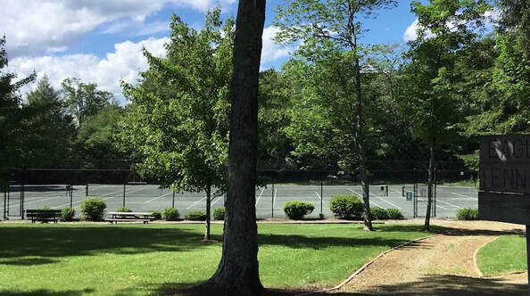
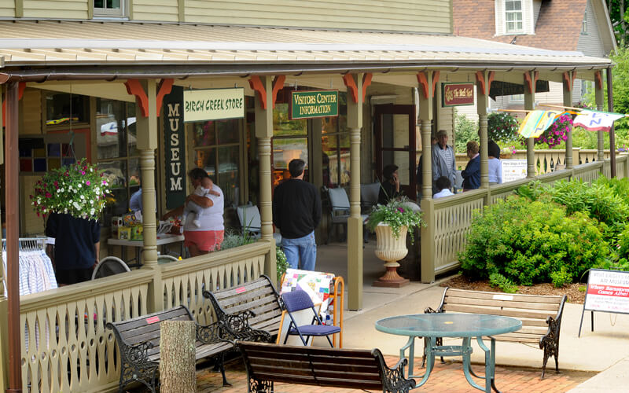

Eagles Mere is a small lake community in Sullivan County, Pennsylvania that was founded in 1899. There are all sorts of activites and places here to visit. Click on the lake to learn more about the beach, lily pond, and eagles, the tennis courts to see what fun activities you can do, and the shops to learn about restaurants and stores around Eagles Mere!


Made By: Ellie Carter